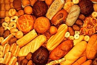

|

All foods contain water. Even dry food such as cookies and crackers contain a few percent water. Much of the water in food is contained inside cells of plant and animal tissues. Often the water is loosely bound to chemical compounds as hydrates or more strongly bound as part of the chemical structure itself. This means that the water will not flow as the cell is cut open. For example, lean beef contains 60 percent water and lettuce is about 98 percent water - when we chop the lettuce or cut the beef, water does not run out onto the kitchen counter top When water is present as a hydrate, it still has the properties of free water. For example it can freeze or dissolve other chemicals. Bound water is part of molecules such as complex carbohydrates and does not freeze or boil and cannot be squeezed out of tissues. The more water there is in food the easier it spoils. More correctly, the activity of the water is what we should consider. Activity is defined as the vapour pressure of water in a food to that of pure water at a specified temperature and pressure. Water activity can be reduced by drying, freezing, adding salt or sugar. In this way the water becomes less available for microorganisms. Intermediate moisture foods are still soft enough to eat but have a water activity between 0.7-0.9 and are not susceptible to microbial growth. Fresh fruits and meats have a water activity of 0.95 -1.00. Water content of some foods
|